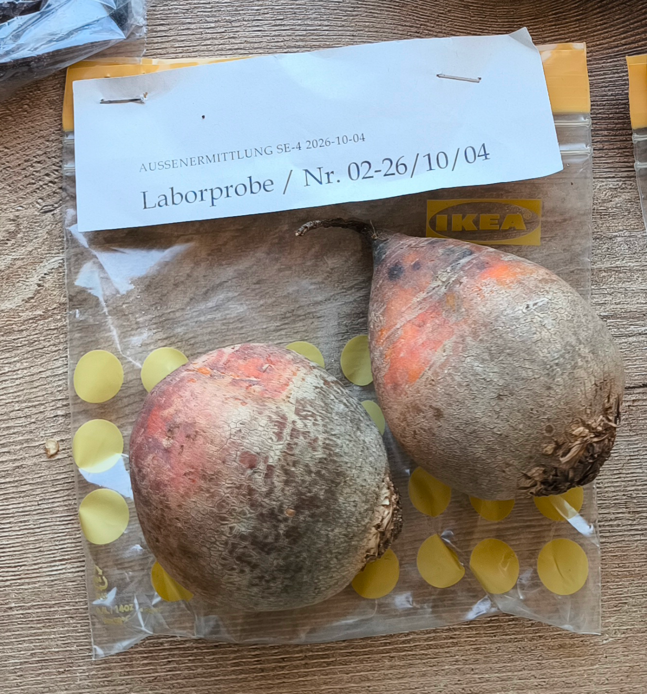
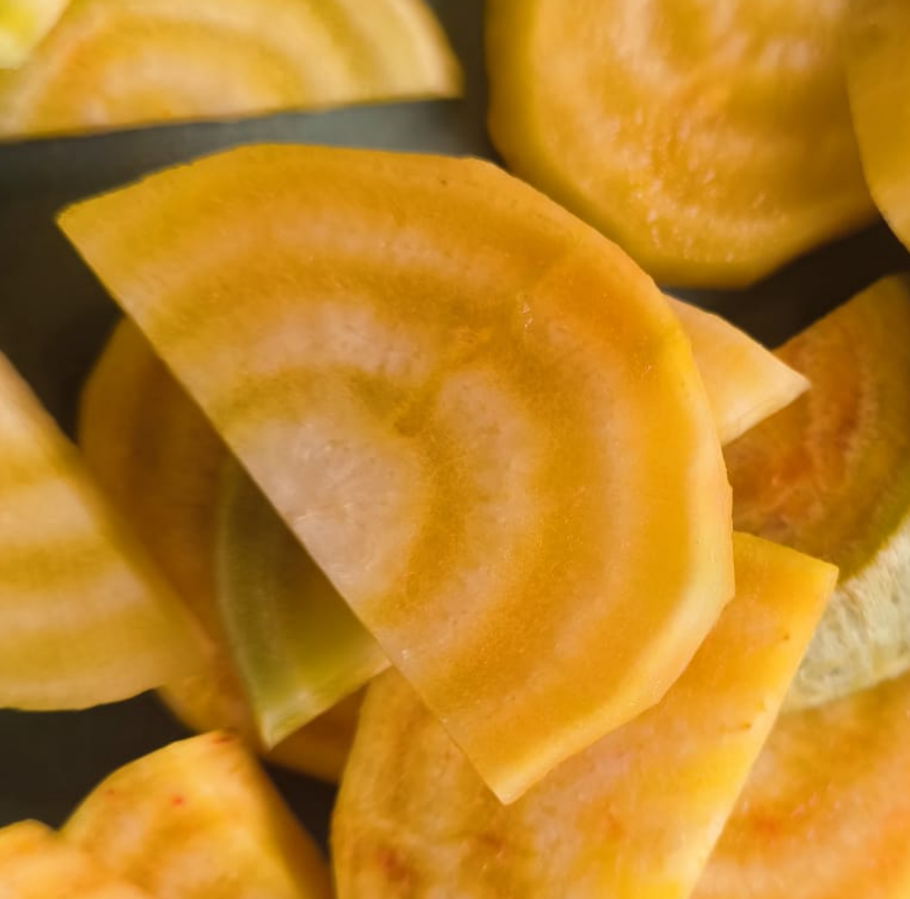
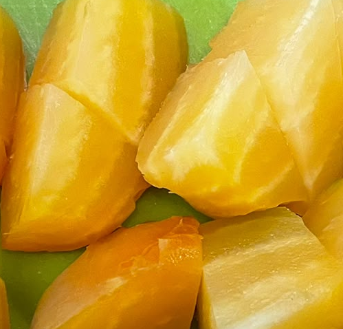
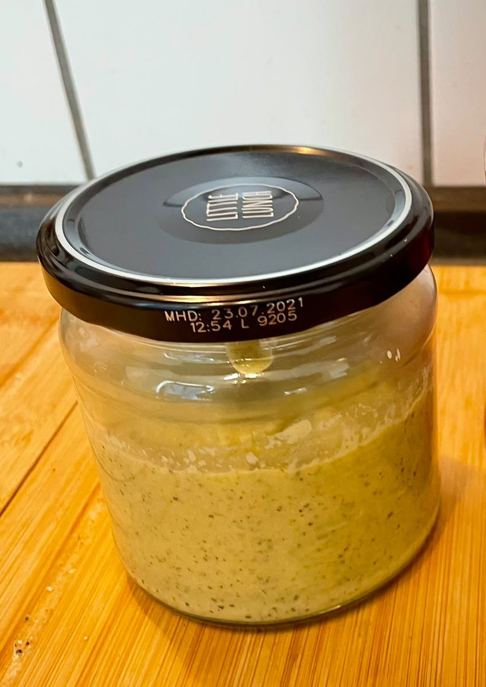
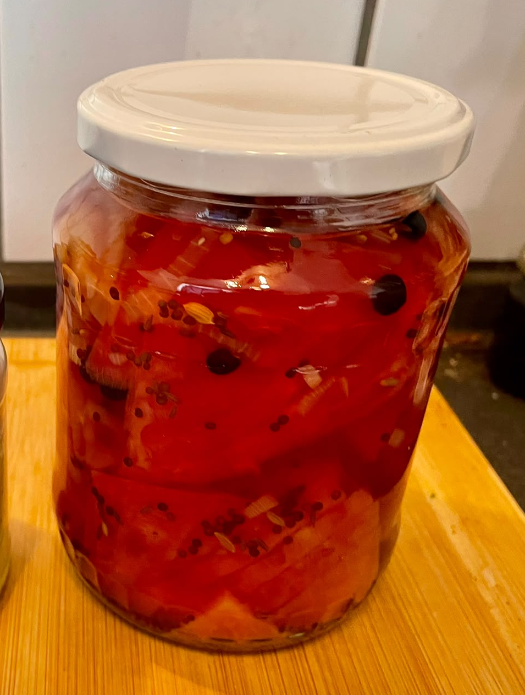

Sensorische Auffälligkeit und mikrobielle Reaktanz
Laborbericht Nr. 02 · Sensorische und mikrobiologische Probenuntersuchung
Untersuchungsauftrag
- Sensorische Prüfung im Anlieferungszustand (A) und nach thermischer Modifikation (B).
- Bestimmung der mikrobiologischen Reaktanz (MBR) im MD-Trakt unter Normbedingungen sowie des OI 24 Stunden nach MBR.
PROBENBESCHREIBUNG UND EINGANGSBEFUND

Eingangsbefund
Probe präsentiert sich in einer tropfenförmigen bis kegelartigen Form. Extrem rigide und druckresistent, Gewebe leistet manuellem Druck der Prüfklasse I maximalen Widerstand; es sind keinerlei weiche, fäulnisverdächtige Degenerationsherde spürbar. Oberfläche trocken, uneben und stark strukturiert.
Methodik
- Probenvorbereitung: Reinigung der Knollen im Bürstenverfahren nach DIN ISO 10390 und geometrische Fraktionierung auf 10–15 mm zur Vergrößerung der Reaktionsoberfläche.
- Offenes System: Flachbett-Pyrolyse unter kontinuierlicher Evaporation des Zellwassers und thermisch induzierter Maillard-Karamellisierung.
- Geschlossenes System: Hermetische Konvektionsthermolyse im autogenen Dampfgleichgewicht zur schonenden Zellwandhydrolyse ohne Massenverlust.
Messergebnisse
| Messwert | Rohprobe | Thermische Präparation Offenes System |
Thermische Präparation Geschlossenes System |
|---|---|---|---|
| pH-Wert | 6,1 | 5,7 | 5,9 |
|
Farbintensität (relative Einheiten) |
 Niedrig · 35–45 %Sanftes, pastelliges Sonnenblumengelb, durchzogen von zarten Ringen in der Nuance einer reifen Primel. |
Hoch · 75–85 %
Tiefes, feuriges Ringelblumen-Orange mit glänzenden, bernsteinfarbenen Rändern. |
 Moderat · 60–70 %Saftiges, durchscheinendes Gelb, das an flüssigen Akazienhonig erinnert. Gleichmäßig hydratisierte Struktur. |
| Wassergehalt | 87 % | 77 % | 85 % |
| OI (relative Einheiten) |
2/10 Erdig-gemüsig |
8/10 Nussige Röstaromen |
7/10 Wohlig süß |
| MBR (ml/(g·h)) |
1,5–2,5 | 3,0–4,5 | 5,0–6,5 |
Auswertung und Interpretation
Bewertung der mikrobiologischen Reaktanz nach 24 Stunden: Unter lautstarkem Protest der Mikroben entstehen kurzkettige Fettsäuren und Gase. Das finale olfaktorische Ergebnis der Fermentation hat allerdings jeglichen „blumigen Primel-Charakter“ verloren. Es tendiert mikrobiologisch korrekt eher in Richtung „gereifter Schwefel-Vulkanismus auf feuchtem Waldboden“.
Kriminalistischer Abgleich
Eine akute Gefährdung laufender Ermittlungen im operativen Fall Nielsen wird zum aktuellen Berichtszeitpunkt als geringfügig eingestuft. Eine olfaktorische Enttarnung des verdeckt operierenden Außendienst-Agenten DD ist unwahrscheinlich. Die taktische Tarnung bleibt operativ gedeckt.
Gesamtbewertung
Die olfaktorische Auffälligkeit der Probe wurde bestätigt.
Eine Übereinstimmung mit den im Rahmen der Sonderermittlung „Schnüffeln im Berufsleben“ dokumentierten Wahrnehmungsleistungen des CI-Drathen konnte mangels standardisierter Vergleichsmessung nicht abschließend bewertet werden.
Aktenvermerk des Zentrallabors
Hinweis der Prüfstelle: Der zugrunde liegende Referenzdatenbankeintrag P-6180466 weist erhebliche datentechnische Inkonsistenzen sowie eklatante Dokumentationslücken auf.
- Sensorische Bewertung im Anlieferungszustand: OI unauffällig; gefundene Karbolspuren sind auf eine Kontaminierung der Umgebung zurückzuführen.
- Sensorische Bewertung nach thermischer Behandlung: Untersuchung dauert an.
- OI nach MBR: Vergleichsmessungen verzeichnen eine Intensitätsquote von 100 % im olfaktorischen Zielbereich. Die damit verbundene olfaktorische Beeinträchtigung des unmittelbaren Laborumfelds ist als akut und raumfüllend einzustufen.
Kommentar
Rückstellproben wurden zur späteren forensischen Verifikation amtlich gesichert. Aufgrund akuter sensorischer Anomalien in Teilprobe 02 erfolgte die nachträgliche kriminaltechnische Konservierung der phänotypisch identischen Probe 01.

